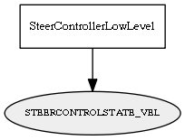

Global overview
All modules
All variables
All commands
Mission files
Pipelines
Variable: STEERCONTROLSTATE_VEL
Variable info:
Variable name
Short description
Who publishes it?
Who subscribes to it?
STEERCONTROLSTATE_VEL
The current steering encoder velocity (in ticks/s)
SteerControllerLowLevel
Variable graph:

Detailed description:
The current steering encoder velocity (in ticks/s)
Page generated by
Mooxygen 1.1.0
at Thu Jan 22 11:30:21 2015